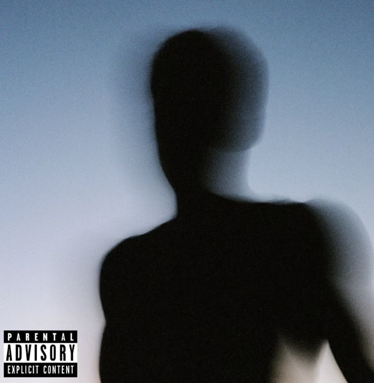
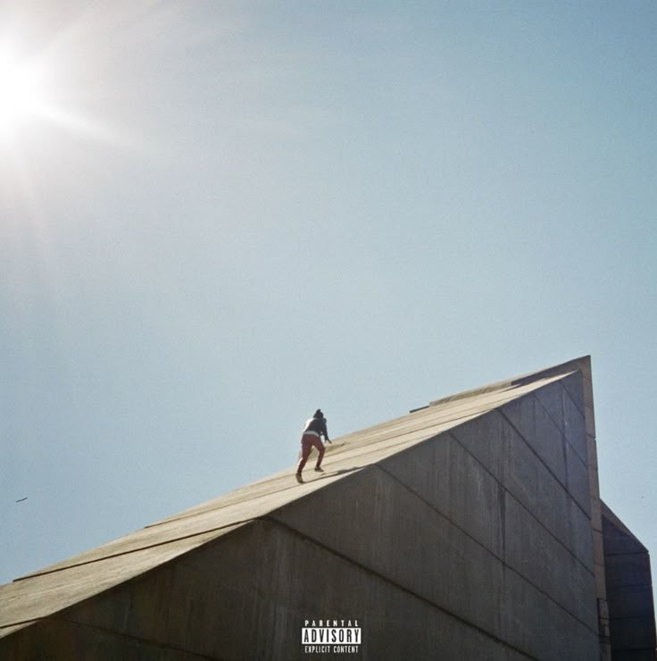

SON OF SPERGY(2025)
Daniel Caesar
12 MUSICAS • 51 MINUTOS • 24 OUT 2025
- 1 • Rain Down(feat. Sampha)
- 2 • Have A Baby(With Me)
- 3 • Call On Me
- 4 • Baby Blue(feat. Norwill Simmonds)
- 5 • Root of all Evil
- 6 • Who Knows
- 7 • Moon(feat. Bon Iver)
- 8 • Touching God(feat. Yebba & Blood Orange)
- 9 • Sign Of The Times
- 10 • Emily's Song
- 11 • No More Loving(On Womem I Don't Love)(feat. 646yf4t)
- 12 • Sins Of The Father(feat. Bon Iver)

NEVER ENOUGH(2023)
Daniel Caesar
15 MUSICAS • 54 MINUTOS • 7 ABR 2023
- 1 • Ocho Rios
- 2 • Valentina
- 3 • Toronto(with Mustafa)
- 4 • Let me Go
- 5 • Do You Like Me?
- 6 • Always
- 7 • Cool
- 8 • Disillusioned
- 9 • Buyer's Remorse(feat. Omar Apollo)
- 10 • Shot My Baby
- 11 • Pain Is Inevitable
- 12 • Homiesexual(with Ty Dolla $ign)
- 13 • Vince Van Gogh
- 14 • Superpowers
- 15 • Unstoppable

CASE STUDY 01(2019)
Daniel Caesar
10 MUSICAS • 43 MINUTOS • 28 JUN 2019
- 1 • ENTROPY
- 2 • CYANIDE
- 3 • LOVE AGAIN
- 4 • FRONTAL LOBE MUZIK(feat. Pharrel Williams)
- 5 • OPEN UP
- 6 • RESTORE THE FEELING(feat. Sean Leon & Jacob Collier)
- 7 • SUPERPOSITION(feat. John Mayer)
- 8 • TO DEEP TO TURN BACK
- 9 • COMPLEXITIES
- 10 • ARE YOU OK?

FREUDIAN(2017)
Daniel Caesar
10 MUSICAS • 44 MINUTOS • 15 AGO 2017
- 1 • Get you(feat. Kali Uchis)
- 2 • Best Part(feat. H.E.R)
- 3 • Hold Me Down
- 4 • Neu Roses(Transgressor's Song)
- 5 • Loose
- 6 • We Find Love
- 7 • Blessed
- 8 • Take Me Away(feat. Syd)
- 9 • Transform(feat. Charllote Day Wilson)
- 10 • Freudian